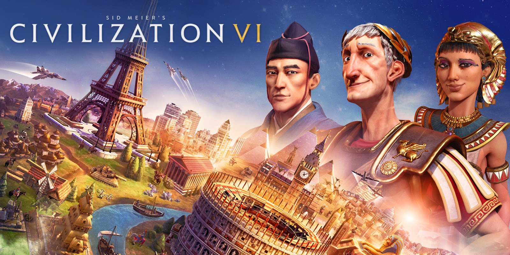
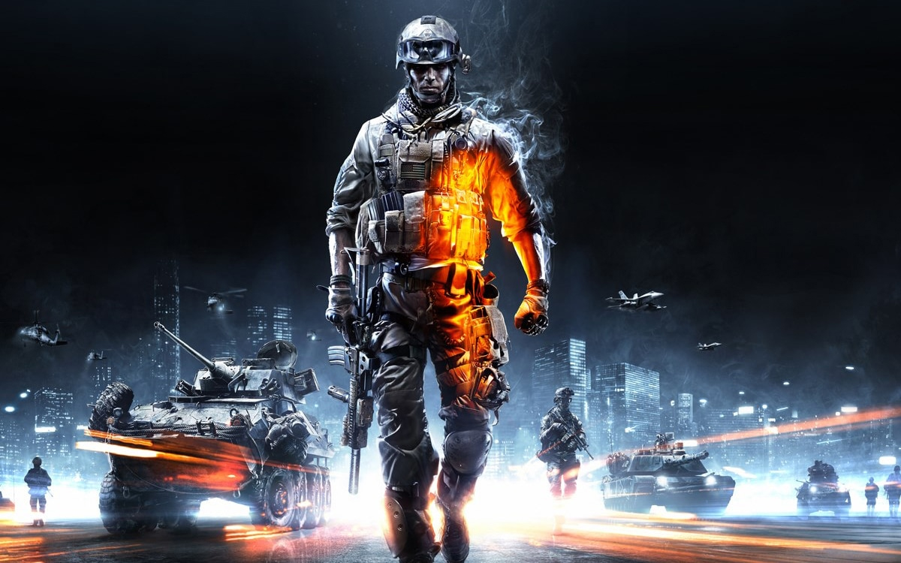

Mon Hobby :
L’une de mes grandes passions en dehors de mon temps de travail, je joue à différents types de jeux vidéo :stratégies, fps , MMORPG, etc . Dans cette partie, je vais essayer de vous en présentez mes jeux favoris.
- Comme par exemple la série des civilisations qui est un jeu tour par tour. Dans ce jeu, on incarne une figure historique telle que Napoléon, Cléopâtre ou encore Bismarck. On doit gérer tout les aspecct d'une civilisation à travers les ages et les époques .
La victoire dans ce jeux s’atteint en ayant la suprématie dans un domaine :
A travers la civilisation qu’on joue on doit atteindre la victoire par plusieurs moyens :
- -La victoire militaire (Conquérir toutes les capitales de toutes les civilisations)
- -La victoire scientifique (Finir le programme apollo et envoyer une fusée dans l’espace)
- -La victoire diplomatique (se faire élire président du monde aux conseil de l’ONU)
- -La victoire religieuse (La religion que vous avez créé finit par convertir toutes les populations du globe)

Il y a aussi les jeux comme starcrafts et C&C qui sont des jeux de stratégie en temps réel :
On est sur une carte avec plusieurs ou un seul ennemi.On peut etre contre des joueurs humain ou des IA et être en équipe ou en solo. L’objectif est de détruire les bases ennemies et de créer des unités de plus en plus puissantes tout en protégeant sa base des assaults ennemis
Dans les 2 jeux, il y a des ressources à récolter sur la carte à l’aide de raffinerie et d'unités de collecte. Avec ces ressources on peut améliorer notre base et attaquer les bases des autres joueurs. Souvent sur la carte, il y a des objectifs donnant des bonus de ressources.
Pour avoir la victoire, il faut détruire les bases adverses.
Des fps (first Person Shooter) que ce soit en solo ou en multijoueur.
Je joue beaucoup à la série des jeux battlefield où on incarne un soldat en pleine guerre .
Le mode de jeu le plus connu est le mode conquête où deux équipes de 32 joueurs chacune s’affrontent pour la capture de plusieurs points de contrôle. Chaque équipe a un nombre donné de tickets.
Les tickets se perdent quand les ennemis ont plus de points de contrôle que votre équipe et quand vous apparaissez sur la carte après une mort.
Durant ces longues parties, on a accès à un grand nombre de véhicules militaires tels que des avions,des hélicoptères, des tanks, des jeeps.
On peut incarner plusieurs classes de soldat et personnaliser leurs camouflages, les armes.
Chaque classe possède ses armes, utilité et gadget unique.
Le nombre de Classes est au nombre de 4 et chacune à des caractéristiques uniques :
- Le médecin (soigner et peut réanimer ses cammarades mort pendant une courte durée ),
- L'ingénieur (possède des armes anti-tank et des explosifs de toute catégorie),
- Le soutien (peut donner des munitions),
- L’éclaireur (sniper).
